A living library
Incremental tag scan, fallback to Artist/Album/NN title, embedded or folder covers, "(1)" duplicates skipped. The folder is watched continuously.
Self-hosted music server · AGPL-3.0
SonNuage streams your library like a streaming service, but from your machine: web player, Android app with Android Auto, desktop app. No subscription, no third-party account, no ads.
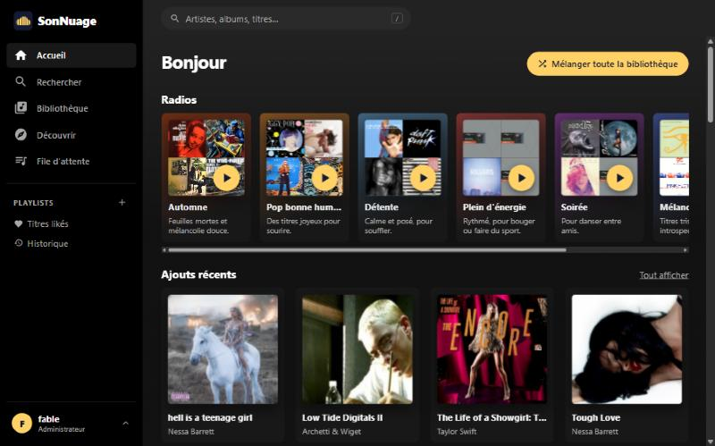
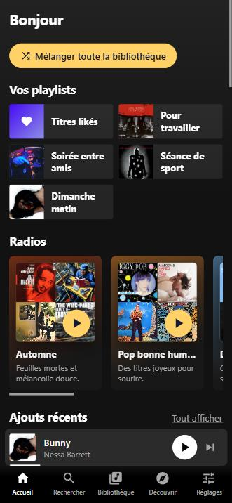
The app, as it is
Each card opens a preview: screenshots taken on a real instance, with a real library, shown in French. Account names are blurred.
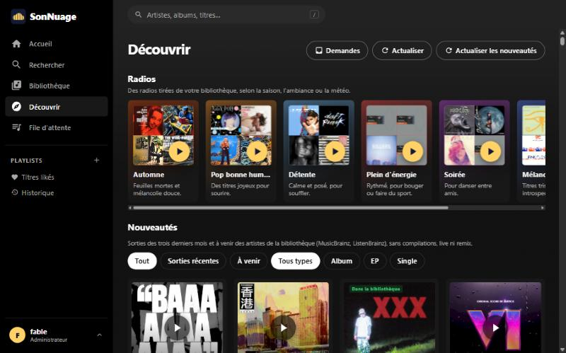
New releases from your artists, similar artists, 30-second previews.
Preview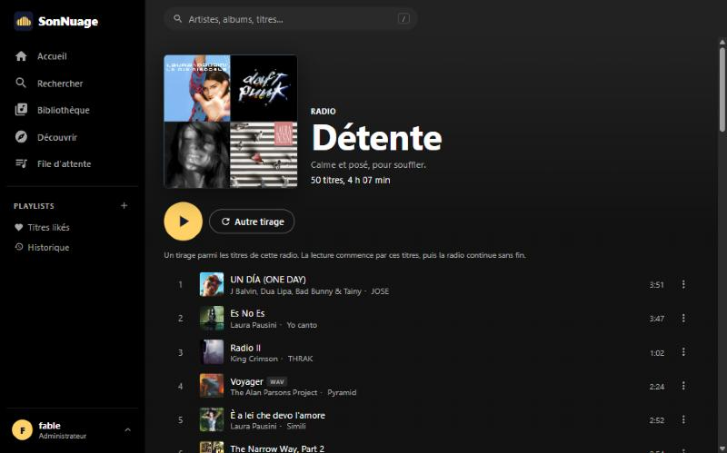
Seasons, moods and weather, drawn from your library.
Preview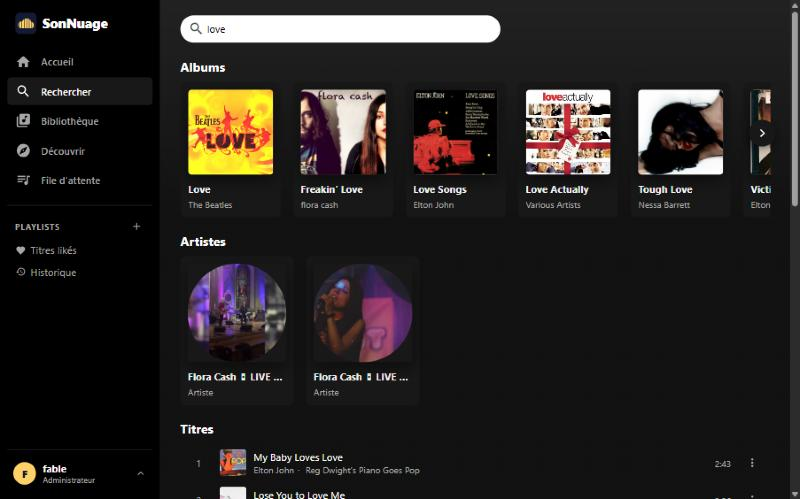
Albums and artists as carousels, songs as a list.
Preview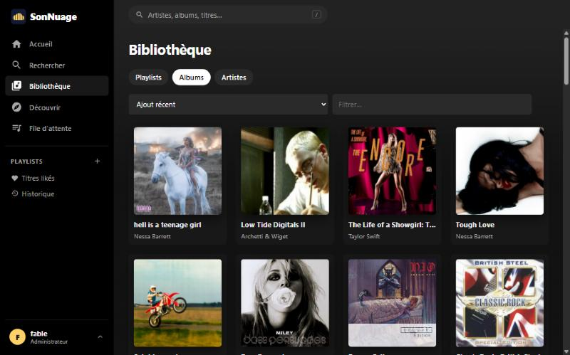
Albums, artists, playlists, favorites and ratings.
Preview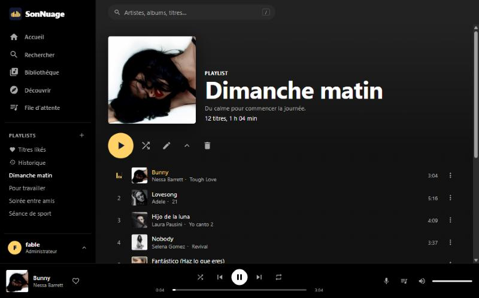
Crossfade, infinite play, synced lyrics.
Preview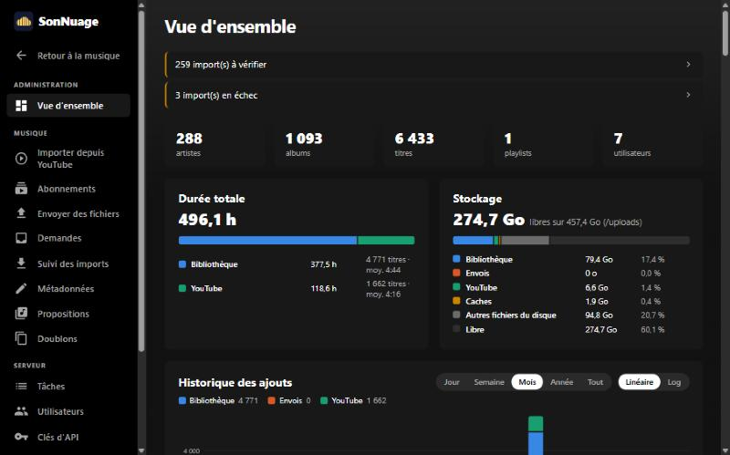
Dashboard, tasks, accounts and settings.
PreviewThe same interface, built for the thumb.
PreviewThe Discover page gathers recent and upcoming releases from the artists in your library (MusicBrainz and ListenBrainz) and artists close to the ones you play most. Every song can be heard as a 30-second preview before an admin imports it or a contributor asks for it.
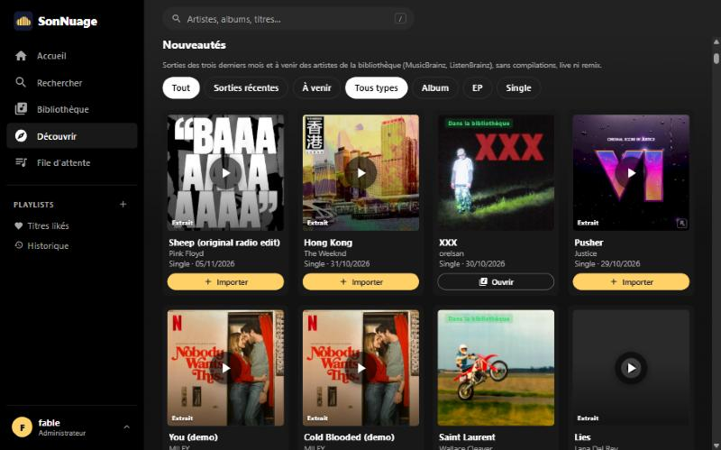
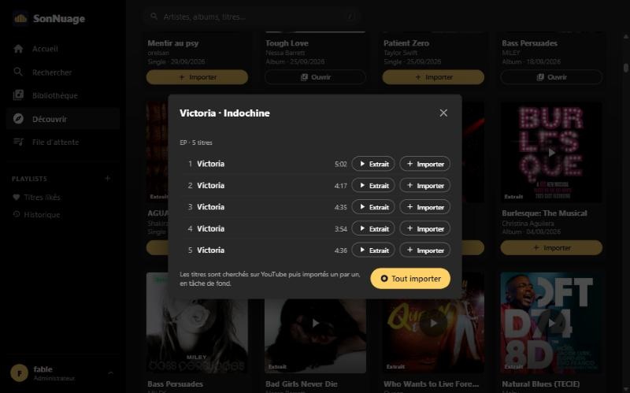
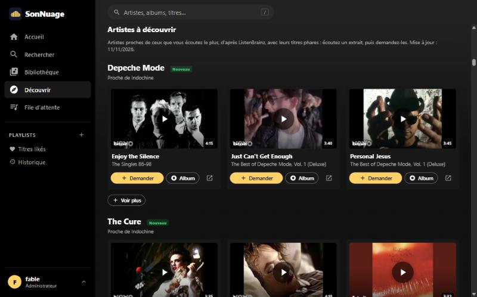
Themed radios are built from your own files, using MusicBrainz tags and an audio analysis run on your server. A radio opens on a draw of its songs; playback then goes on endlessly. The weather radio follows the weather where you live.
Search ignores accents and finds substrings with no setup; with optional Elasticsearch it tolerates typos. A request such as “calm music to work” is understood as a mood and starts as a radio.
The library follows your music folder: a copied album shows up on its own. Tracks, albums and artists can be favorited and rated from 1 to 5 stars; playlists can be reordered and are shared with Subsonic apps.
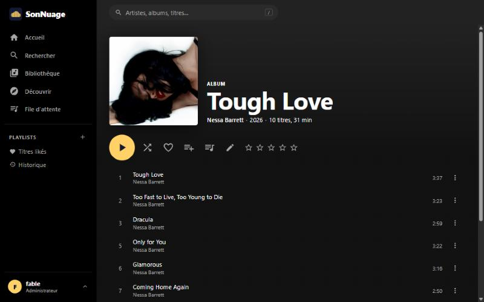
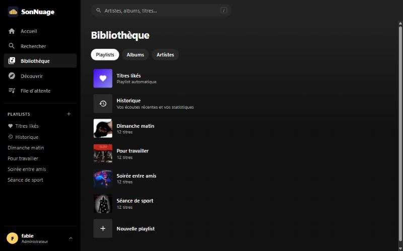
The player preloads the next tracks, blends them with an adjustable crossfade and does not stop at the end of the queue when infinite play is on. Synced lyrics follow the music; a tap on a line jumps to it.
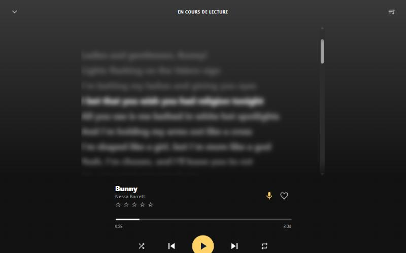
Everything is set from the interface: imports, file uploads, metadata, duplicates, accounts and roles (user, contributor, administrator). Background tasks are visible live, queue by queue; each one can be paused, and the heaviest can wait for quiet hours.
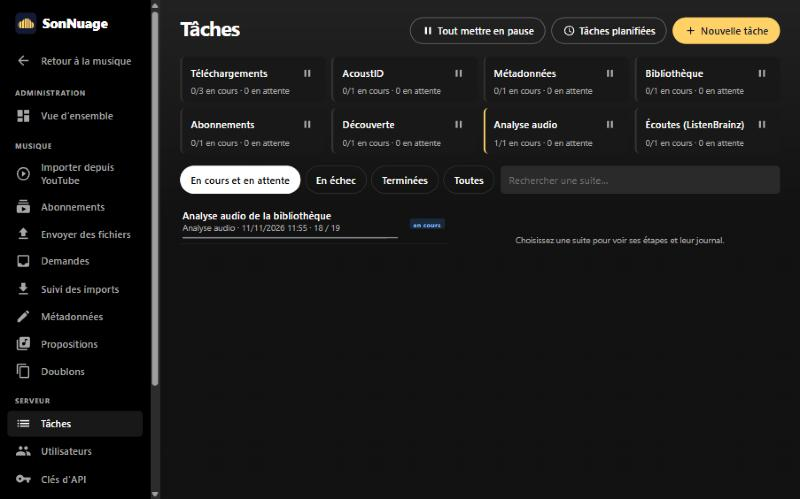
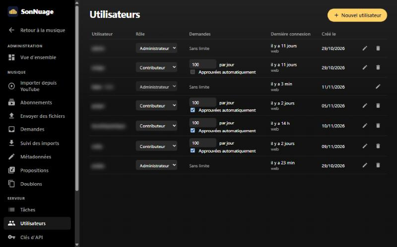
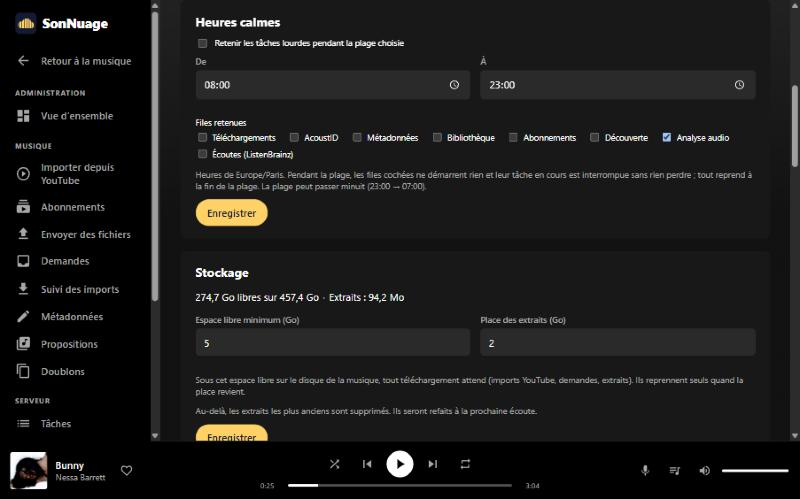
Pages are shared between the web, Android and desktop: a new feature reaches every client at once. Android adds the offline cache, lock screen controls and Android Auto. An iOS app shares the same code: its CI builds an unsigned .ipa you install yourself (no CarPlay).
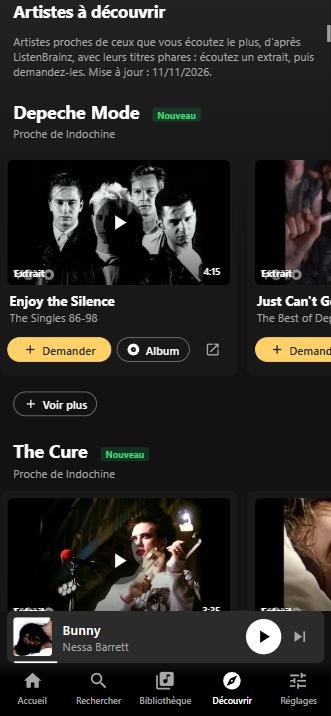
Everything you expect from a streaming service
Incremental tag scan, fallback to Artist/Album/NN title, embedded or folder covers, "(1)" duplicates skipped. The folder is watched continuously.
Original, FLAC, MP3 320 down to 64. The stream starts while encoding, then stays cached. A file is never "upscaled".
Next tracks preloaded, 1 GB disk cache and 5-minute buffer on Android, automatic resume, separate quality on mobile data.
A crossfade of 0 to 5 s between tracks. With infinite play, the queue never runs dry: same genre, then same artist, then the rest of the library.
Releases of the last three months and upcoming ones, from MusicBrainz and ListenBrainz, without compilations or live albums. A release opens on its songs, to preview and import one by one or as a whole.
Artists close to the ones you play most, with their top songs as 30-second previews. A song that was asked for or imported gives way to the next one.
Halloween, Christmas, summer, “Good mood pop”, chill or focus, and a weather radio that follows the weather where you live. Drawn from your library using MusicBrainz tags and a local audio analysis.
Tracks, albums and artists as favorites, ratings from 1 to 5 stars. Poorly rated tracks drop out of the radios, your favorites come up more often.
The sung line follows the music, one tap jumps to it. A .lrc file next to the track comes first, otherwise LRCLIB, a free database with no account.
Their 10 most played tracks first, "See all" for the rest, then the discography album by album.
With no setup: substrings, accent-insensitive. With optional Elasticsearch: typos, "Did you mean…?", acdc finds AC/DC. A mood asked for in plain words starts as a radio.
Crossfade, infinite play and interface language follow your account on all your devices, with a local copy for offline use. Audio quality stays specific to each device.
A real app, with lock screen controls, Playlists, Albums, Artists and Recent tabs in the car, search and voice commands.
Windows, macOS and Linux, with a system tray icon. Written in .NET on the system webview: no bundled Chromium.
Search, playlists, channels, synced subscriptions. Metadata rebuilt from MusicBrainz and the AcoustID fingerprint, official cover art, audio never re-encoded. Admins only.
A contributor hears a preview, then asks for a song or an album; the admin approves, or grants automatic approval and a number of requests per day.
Dashboard, resumable album uploads, tag and cover editing, accounts, live task queue.
Each task queue can be paused; the heaviest, such as the audio analysis, can wait for a time window. The SQLite database is backed up from the settings.
No port to expose with a Cloudflare tunnel, login rate limiting, token-protected streams that are never cached by the CDN.
Symfonium, Feishin, DSub or Tempo plug into the Subsonic and OpenSubsonic API, with a dedicated, revocable password per account. What is supported
Self-hosting without the chores
A single container ships the server, the web client, ffmpeg and the database. The sample deployment is ready for your own Cloudflare tunnel (a free account is enough): the service is reachable from anywhere without opening a single port on your router.
A sample compose.yaml and .env, nothing else.
It is mounted read-only: SonNuage never changes anything in it. YouTube imports and uploaded files go to a separate folder.
The library is scanned, then watched: a copied album shows up on its own.
cp .env.example .env
# in .env: MUSIC_DIR=/path/to/your/music
docker compose up -dSubsonic and OpenSubsonic API
Symfonium, Feishin, DSub, Substreamer or Tempo connect to your library, alongside the SonNuage apps.
To connect: Settings → Subsonic apps, generate a dedicated password, then give the app the server address, your username and that password. Revocable in one click.
| Feature | Support | Comment |
|---|---|---|
| Library: artists, albums, tracks, genres | Yes | By tags or by folders. |
| Search | Yes | Accent-insensitive. An empty query lists everything, for syncing. |
| Streaming and transcoding | Yes | Original, FLAC or MP3 from 320 to 64 kbps, start mid-track. |
| Downloads and cover art | Yes | |
| Playlists | Yes | The same as in the SonNuage apps. |
| Play history (scrobble) | Yes | Counts towards your most played tracks. |
| Lyrics | Yes | Synced: .lrc file or LRCLIB. |
| Album lists | Yes | Recent, frequent, highest rated, starred, by year or genre, random. |
| Favorites | Yes | Tracks, albums and artists. |
| Ratings (1 to 5 stars) | Yes | On tracks, albums and artists. |
| Play queue shared across devices | Yes | Resume on another device, same track, same second. |
| Themed radios | Yes | As “Radio …” playlists, redrawn each time they are opened. |
| Mix and similar tracks | Yes | The SonNuage radio: same genre, then same artist, then the rest. |
| Now playing | Yes | What each account is playing in its Subsonic apps. |
| Artist info | Partly | Similar artists (ListenBrainz) when the artist is identified on MusicBrainz; no biography or photo. |
| Start a scan | Partly | Not needed: the library is watched continuously. |
| Podcasts, internet radio, shares, bookmarks | No | Empty answer, the app carries on. |
| Jukebox, user management | No |
API 1.16.1: token, password or apiKey; XML, JSON and JSONP. OpenSubsonic extensions: apiKeyAuthentication, formPost, songLyrics, transcodeOffset. Behind Cloudflare Access, let /rest/* through.
An honest comparison
Each has its strengths: this table also shows what SonNuage doesn't do (yet).
| Criterion | SonNuage | Navidrome | Jellyfin | Plex + Plexamp | Funkwhale | Ampache | Koel |
|---|---|---|---|---|---|---|---|
| Licence | AGPL-3.0 | GPL-3.0 | GPL-2.0 | Proprietary | AGPL-3.0 | AGPL-3.0 | MIT |
| Services to deploy | 1 container | 1 binary or container | 1 container | 1 server | Postgres, Redis, workers, proxy | PHP + MariaDB | PHP + database |
| Remote access without opening a port | Your Cloudflare tunnel, preconfigured | To configure | To configure | Plex relay | To configure | To configure | To configure |
| No third-party account | Yes | Yes | Yes | Plex account required | Yes | Yes | Yes |
| Official Android app | Yes | Third-party Subsonic clients | Video-oriented, third-party Finamp | Plexamp | Third-party clients | Third-party clients | Depends on edition |
| Android Auto | Native | Via third-party clients | Via third-party clients | Native | Via third-party clients | Via third-party clients | Not documented |
| Official desktop app | Win · Mac · Linux | Third-party clients | Video-oriented | Plexamp | Web only | Web only | Web only |
| YouTube import + MusicBrainz / AcoustID metadata | Built in | No | No | No | No | No | No |
| Typo-tolerant search | With Elasticsearch | Basic | Basic | Yes | Basic | Basic | Basic |
| Subsonic API compatible | Yes, with OpenSubsonic | Yes | Via plugin | No | Yes | Yes | No |
| Federation (ActivityPub) | No | No | No | No | Yes | No | No |
| Movies and TV shows | Music only | Music only | Yes | Yes | Music and podcasts | Mostly music | Music and podcasts |
Based on each project's public documentation as of November 2026. Spotted a mistake? Open an issue and we'll fix it.
Free software
SonNuage is released under the GNU AGPL v3.0 or later: use it, study it, change it, share it. A modified version, even one offered online, must publish its code under the same licence. Nobody can close the project.
Transparency
Several AIs contributed to SonNuage's code, including Opus 5.5, Muse Spark 1.3 and other models. My role shifted towards steering and reviewing: deciding what to build, settling architecture choices, reviewing, testing in real conditions.
The code is open, and so am I to any review: a remark, a criticism or a proposed fix is welcome.
The story
SonNuage was born in August 2026. I was tired of the usual solutions: none of them really fit the way I listen. There was always one compromise too many, one more service to maintain, a missing app, a feature that wasn't designed for listening to your own music every day.
So I built the one I wanted to use. The project is young and moving fast.